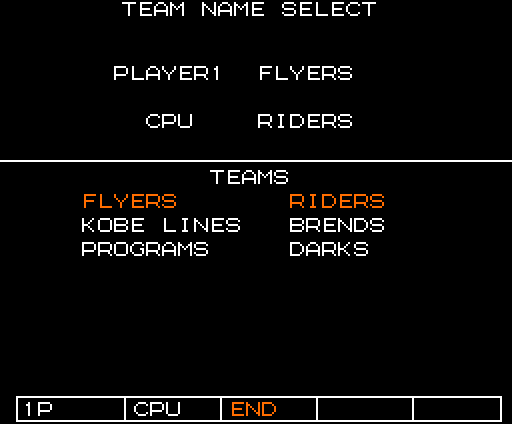
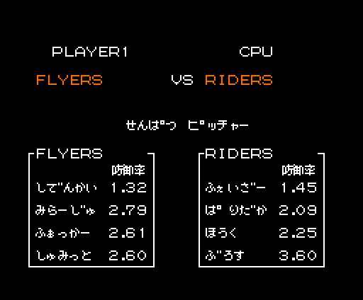
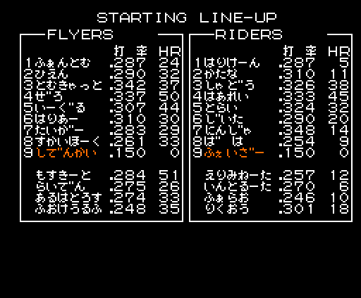
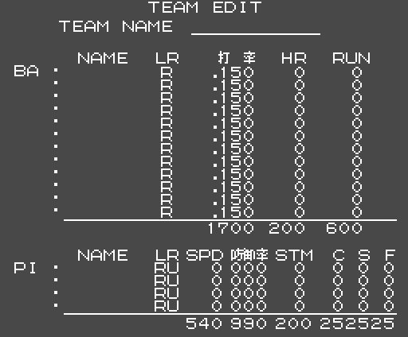
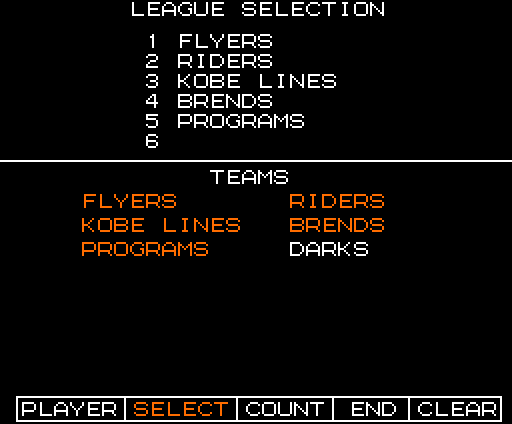
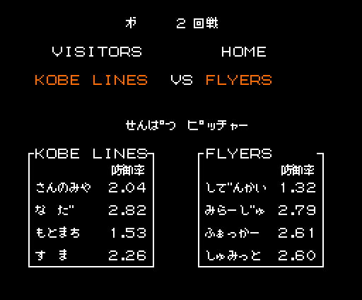
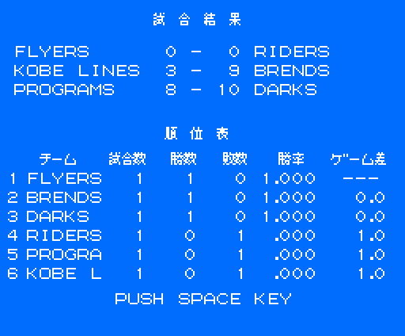

The screens
All of them are drawn with our own code (tools/vram.py, tools/pantallas.py, tools/sprites.py and tools/animaciones.py) following the steps of the routine that paints them, cited for each one. None is a capture. Each one has been compared with the openMSX VRAM dumped with the game running (tools/omsx_vram.tcl, tools/coteja_vram.py); under each one is how much matches.
The game runs in SCREEN 5 on the V9938 (256 × 212 pixels, 16 colours). Almost everything is drawn in two steps: first the graphics are built on page 1 of the VRAM (the "sheet", 32 characters per row) and then copied to the visible page with VDP commands.
The Konami logo

p03:B670 builds the logo on page 1 (p00:57C6: three strips of one-bit characters and the list at p09:BCA5, with the palette at p09:BE86) and p14:872E uncovers it: every two frames it copies one more row, up to 48, to page 0. Checked: 0 bytes different in two dumps.
The intro

p15:BB97, frame by frame. First the stadium alone, 32 frames. Then a ball comes out of it towards the viewer (p15:BD99: position and speed; every frame it slows down, and every 8 it switches to a bigger shape, 1 to 4 pieces of two sprites, p15:BD13 and p15:BD31). Then, with other sprite patterns (p00:5421), a spinning 64 × 64 ball (two shapes taking turns every 8 frames) crosses the screen at 4 pixels a frame, and behind it the title is copied from page 1, column by column (p15:BC39). Checked against the dump of the crossing: page 0 identical and the 32 sprite attributes identical (the last 8 one frame behind: the game copies them to the VRAM in two batches, p00:42A1).

The "THEプロ野球 激突ペナントレース" title (p00:52E7): the pictures at p09:B07A and the character list at p09:B6B9, built on page 1. Checked: 0 bytes different.

The stadium (p00:5427): the pictures at p09:A619 and 16 × 11 characters in runs from p09:AFC4, with the palette at p07:6000. Checked: 0 bytes different.
The menu

p01:651C: the finished intro, the title copied from page 1 to (0x1C, 0x08), the five texts in a row at p13:7D8F and the marker, character 0x9A, on the row of the chosen mode (p01:65AF). With a disk drive and a Game Master 2 a sixth one appears, MEDIA SELECT. Checked: 0 bytes different.
The menus
The screens before and after a game. What changes from one session to another (the chosen teams, the option, the results) and the palette of that moment come from the RAM of an openMSX dump (tools/estados_menus.json); everything else from the code: tools/menus.py repeats its routines and tools/coteja_menus.py compares. All seven checked: 0 bytes different on the visible page.

Choosing the teams (p15:A470): the title by mode, the two-column team list (p13:6A0D), with the chosen ones in colour 4, and the option bar (p15:A67A).

The starting pitchers (p02:9EA9): the game sign (p14:9787) and each team's four pitchers with their 防御率 (p02:9F20).

STARTING LINE-UP (p03:A2ED): each team's 12 fielders, with the names in narrow letters (the dakuten moves 4 pixels, p03:A425), and the pitcher on row 9, in colour 4 (p03:A242).

TEAM EDIT with a new team (p03:B9E7): the grey background, the text at p13:7EC6 with the caps and the columns of starting values (p14:8654).

LEAGUE SELECTION (p13:61BD): the league's teams, numbered, and the list of the six.

In PENNANT the pitchers screen carries the round (第 2 回戦, p14:971A) and VISITORS / HOME.

The round's results and the standings (p15:ADFA): the player's game, the other two drawn by lot, and the table with games, wins, losses, percentage (a four-step long division, p15:AFBD) and games behind the leader (p15:B034).
The field

The field has three zones: the centre and the two sides. Each one is 256 × 512 pixels and is a map of 16 × 8 tiles of 4 × 4 characters (p08:9432); the tiles come from p08:95B8 (and from p08:9A58 in the last two strips of the list). The screen shows part of the zone at a time. Checked: centre zone, the 256 lines that were in the VRAM, identical in two dumps; in another three, 8 to 22 lines differ: the signs and strips the game was drawing at that moment.

The left field zone (tiles at p08:9B28). Checked: all 256 lines identical in a dump of a WATCH game.

The right field zone (tiles at p09:A088). Checked: 248 of 256 lines identical; on the other 8 the game had written " OUT " on top at (112, 240) (p13:7E69), and drawing that text gives exactly what is in the dump.
The pitch

The pitching screen, seen from behind home plate (p01:6352): the background in runs from p08:9220, two frames and the text at p13:7E1E (S B O, the 回 of the inning, HR and 打率). With no game going, the boxes and figures are empty. Checked: 818 of 864 blocks identical; the rest is the little bases window and the figures of the game being played.

The signs are drawn on it as picture lists, in blue or red (the palettes at p00:51B2), each with a twin for a batter on the other side: PLAY BALL! when a half inning starts (p13:7925), LUCKY 7 in the seventh (p11:96EE), PLAY! (p13:BA9B), BALL! (p11:9401), STRIKE! (p11:94BB) and OUT! (p11:95A8). All six checked, identical byte for byte in the dumps where they appear; LUCKY 7 by setting the seventh inning in RAM (0xE19B = 0x0C) before the game starts.
The players
The players are V9938 mode-2 sprites: 16 × 16 pixels, one colour per line, and two sprites in the same place, the second with the CC bit, mix their colours. The game keeps the attributes in RAM (0xE100); their fourth byte is not a colour but an index: p00:5B1F unpacks its run from p09:BC05 into the sprite's 16 line colours. Each player is an outline sprite (index 7) and a shirt sprite: 0x18 for the home team and 0x1B for the visitors, palette colours 8 and 11, which come from the team (p00:5517, the table at p09:BFDE: FLYERS blue, RIDERS orange, KOBE LINES green, BRENDS light blue, PROGRAMS white, DARKS grey). Here, the demo's: RIDERS against KOBE LINES. Checked: the colours of the 463 visible sprites in the dumps come out of p09:BC05 identical.
The batter


The batter is 18 or 20 sprites. At every new ball (p02:8860), p00:5677 unpacks his pattern store into an off-screen part of page 0 (0x6C00: p10:604D and p10:7C4B, or p10:6808 and p10:7ECB batting left). Each stance (0-6) copies 64-byte half lines from there to the sprite pattern table, following the 11-byte entry at p10:6000 (p00:5761), and sets its attributes (p11:9911, or p11:991F batting left; p00:5877). The swing (p02:8663): at rest stance 4; with the button, every 2 frames 3, 2, 1 and 0; on release, every 3 frames back. In phase 2 the stance is 5 with the stick up and 6 down (p00:584F).

The seven stances on both sides. Checked: the patterns and attributes of stances 0 and 4 on both sides, identical byte for byte in the dumps.
The pitcher


The pitcher is 4 sprites. p00:56C4 copies the 7 poses of his style (p10:6FBE, 4 styles; left-handers, mirrored) to lines 0xF9-0xFF of page 0, and whenever the motion step (0xE1D3) changes p00:56B1 copies that pose's line to sprite patterns 0xB0-0xBF. The step starts at 5 (p03:AA11) and goes down with the waits at p03:A83F (16, 16, 20 and 24 frames); at 1 the ball leaves. The attributes of each step come from p11:9DB2.

The 4 styles and their mirrors, steps 5 to 0. Checked: the pose and the 4 attributes, identical byte for byte in 18 dumps, with steps 0 to 5.
On the field

On the field each player is two sprites: pattern d with the outline and d + 4 with the shirt (p01:7594). Fielders go by direction (p01:7280: up 0x00, down 0x10, left 0x20, right 0x30) and runners the same from 0x70 (p02:8FC8); bit 3 of the 0xED0E counter, which changes every 8 frames, alternates the legs.

All the poses: fielders (and crouching, 0x40), runners and their slides (0xE0 + 8 per base, p02:8C74), the catcher's 14 (p00:5716, p11:8759) and the 5 of whoever holds the ball (p00:572E, p11:8499). The patterns are the game's (p00:537C, p00:539D, p00:53CC), checked: identical in the field dumps except those the game changes on the fly.
The sprite patterns

The game's 64 patterns of 16 × 16 (VRAM 0xF800-0xFFFF), in a single colour. On top of them, p00:572E puts the ball holder's at 0xFAC0 and p00:5716 the catcher's at 0xFFC0.
The font

161 one-bit characters at p12:B6C3: digits, letters, hiragana, katakana and signs. They are put twice on the sheet, the second time in colour 4. On top go two kanji sets: 17 from p09:B942 for the game (戦打数安本塁三振四死球盗失策防御率) and 11 from p09:B9DA for the PENNANT screens (試合結果勝敗差順位表 and a quote mark).